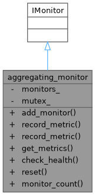
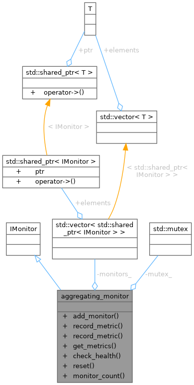

- Generated by
 1.12.0
1.12.0
|
Monitoring System 0.1.0
System resource monitoring with pluggable collectors and alerting
|
Example 6: Aggregating monitor pattern. More...


Public Member Functions | |
| void | add_monitor (std::shared_ptr< IMonitor > monitor) |
| common::VoidResult | record_metric (const std::string &name, double value) override |
| common::VoidResult | record_metric (const std::string &name, double value, const std::unordered_map< std::string, std::string > &tags) override |
| common::Result< metrics_snapshot > | get_metrics () override |
| common::Result< health_check_result > | check_health () override |
| common::VoidResult | reset () override |
| size_t | monitor_count () const |
Private Attributes | |
| std::vector< std::shared_ptr< IMonitor > > | monitors_ |
| std::mutex | mutex_ |
Example 6: Aggregating monitor pattern.
Definition at line 301 of file monitor_factory_pattern_example.cpp.
|
inline |
Definition at line 307 of file monitor_factory_pattern_example.cpp.
|
inlineoverride |
Definition at line 351 of file monitor_factory_pattern_example.cpp.
References kcenon::monitoring::health_check_result::message, kcenon::monitoring::health_check_result::status, and kcenon::monitoring::health_check_result::timestamp.
|
inlineoverride |
Definition at line 332 of file monitor_factory_pattern_example.cpp.
References kcenon::monitoring::metrics_snapshot::capture_time, kcenon::monitoring::metrics_snapshot::metrics, monitors_, mutex_, kcenon::monitoring::metrics_snapshot::source_id, and kcenon::monitoring::metric::value.
|
inline |
Definition at line 368 of file monitor_factory_pattern_example.cpp.
|
inlineoverride |
Definition at line 312 of file monitor_factory_pattern_example.cpp.
|
inlineoverride |
|
inlineoverride |
Definition at line 360 of file monitor_factory_pattern_example.cpp.
|
private |
Definition at line 303 of file monitor_factory_pattern_example.cpp.
Referenced by add_monitor(), get_metrics(), monitor_count(), record_metric(), record_metric(), and reset().
|
private |
Definition at line 304 of file monitor_factory_pattern_example.cpp.
Referenced by add_monitor(), get_metrics(), monitor_count(), record_metric(), record_metric(), and reset().